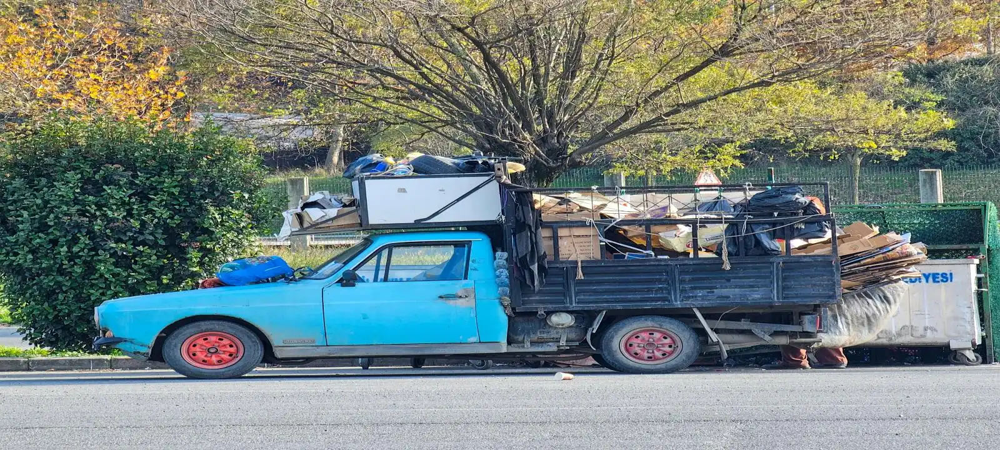

What Is Rubbish Removal In Launceston,TAS?
Rubbish removal is a fully managed waste collection service where unwanted items are removed directly from your property by a collection team. Many people use rubbish removal Launceston services when they have furniture, household rubbish, green waste, renovation debris, or general clutter that needs to be cleared without hiring a skip bin. The service is commonly used for residential properties, rental homes, commercial premises, and one-off cleanup projects throughout Launceston.
Common Rubbish Removal Projects In Launceston TAS
A typical launceston rubbish removal service may be used for house cleanouts, deceased estates, moving house, end-of-lease clearances, office cleanups, renovation waste, and furniture disposal. Many customers contact us when waste has accumulated over time and needs to be removed quickly. The service is designed for projects where loading a skip bin yourself would be inconvenient, time-consuming, or physically demanding.
Garden Rubbish Removal Launceston
Garden rubbish removal Launceston services are commonly used after tree pruning, landscaping projects, storm cleanup work, and seasonal garden maintenance. Green waste such as branches, leaves, shrubs, grass clippings, and small tree cuttings can quickly build up and become difficult to dispose of using standard household bins. Professional collection helps remove large volumes of garden waste efficiently while keeping outdoor areas clean and accessible.
Household Rubbish And Furniture Removal
Old furniture, broken appliances, unwanted household items, mattresses, boxes, and general rubbish are among the most common materials removed from residential properties. Homeowners often organise rubbish removal before moving house, preparing a property for sale, downsizing, or reclaiming storage space. Removing bulky items can improve access, reduce clutter, and make living areas easier to manage.
Why Choose Our Rubbish Removal Service in Launceston
Rubbish removal is often preferred when customers want waste removed immediately without arranging a skip bin delivery or loading materials themselves. This can be particularly useful for elderly homeowners, busy households, rental property managers, and projects involving heavy or bulky items. For many one-off cleanups, rubbish removal Launceston services provide a faster and more convenient solution than keeping a skip bin on-site for several days.
What Affects Rubbish Removal Costs?
The cost of rubbish removal usually depends on the volume of waste, type of materials being collected, labour requirements, property access, and disposal fees. Smaller household cleanups are often quicker and less expensive than large property clearances or renovation projects. When providing a quote, we consider the amount of rubbish involved and the most efficient way to remove it from the property.
Rubbish Removal Across Launceston Tasmania?
We provide rubbish removal Launceston Tasmania services throughout the city and surrounding suburbs. Whether you need rubbish removal Launceston TAS for a residential property, investment property, commercial site, or garden cleanup project, we help connect customers with practical waste removal solutions across the local area. Collection services can often be organised for both small and large cleanup projects depending on access and waste volume.

Frequently Asked Questions
What types of rubbish can be removed?
Most household rubbish, furniture, garden waste, renovation debris, office waste, and general unwanted items can be removed. Some restricted materials, hazardous waste, chemicals, and asbestos usually require specialised disposal services.
Do you offer garden rubbish removal in Launceston?
Yes. Garden rubbish removal Launceston services are commonly used for branches, leaves, shrubs, grass clippings, landscaping waste, and storm cleanup projects. Green waste can often be collected separately from general household rubbish depending on the project requirements.
Is rubbish removal better than hiring a skip bin?
It depends on the project. Rubbish removal is often preferred when customers want everything loaded and removed for them, while skip bins are better for projects that generate waste over several days or weeks. The right option depends on the amount of waste, timing, and available space on the property.
How quickly can rubbish be removed?
Collection times depend on availability, waste volume, and property access. Smaller jobs can often be organised quickly, while larger cleanups may require additional planning and labour depending on the amount of material being removed.
Can you remove rubbish from rental properties and deceased estates?
Yes. Many customers use a launceston rubbish removal service for rental property cleanouts, end-of-lease clearances, deceased estates, and properties being prepared for sale. These projects often involve large amounts of mixed household waste that need to be cleared efficiently.